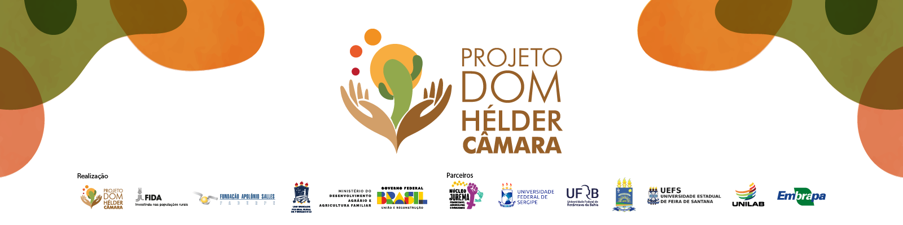

Quem na maioria das vezes cuida de pessoas doentes em casa?
Quem lembra das consultas médicas da família?
Quem organiza a rotina das crianças?
Quem prepara o material escolar ou acompanha tarefas?
Quem costuma acordar mais cedo para cuidar da casa ou da família?
Quem normalmente interrompe seus compromissos para resolver questões familiares?
Quem lava a louça na maioria das vezes?
Quem limpa banheiro, cozinha e quartos?
Quem lava e organiza as roupas?
Quem faz comida diariamente?
Quem percebe primeiro quando falta comida ou produtos de limpeza?
Quem organiza compras do mercado?
Quem lembra aniversários, reuniões e compromissos da família?
Quem planeja o que precisa ser feito dentro de casa?
Quem costuma assumir várias tarefas ao mesmo tempo no ambiente doméstico?
Quem é mais cobrado quando a casa está desorganizada?
Quem tem menos tempo livre por causa das tarefas domésticas?
Quem costuma deixar de descansar para cuidar da casa e da família?